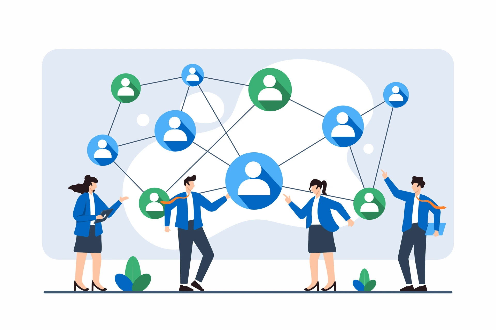

Build Your Network
Networking is not about asking strangers for a job. It is about building relationships that help you learn, explore roles, and get advice from people who have been where you want to go. Even one short conversation can help you understand what skills matter most and what steps to take next.
Quick Start: 3 Steps You Can Do This Week
- Find 3 people: Search LinkedIn for UMSI alumni or professionals in roles you like.
- Send 2 messages: Request a 15–20 minute chat using one of the templates below.
- Do 1 follow-up: Thank them and write down 2 takeaways and 1 next step.
Start Networking with Confidence
Elevator Pitch Template
A short intro makes networking easier. Try this structure and adjust it to your goal:
- Who you are: “I'm a UMSI MSI student interested in …”
- What you've done: “I've worked on projects in … / I have experience with …”
- What you want: “I'm exploring roles in … and would love advice.”
Example
“Hi, I'm a UMSI MSI student interested in UX and product design. I've worked on class projects involving user research and prototyping. I'm currently exploring internship roles and I'd love to learn how you entered the field and what skills you recommend focusing on.”

Why Networking Matters at UMSI
Networking can help you learn what different roles are really like, discover useful communities, and build confidence before applying for internships or jobs. It is one of the most practical ways to turn career exploration into action.
Message Templates
LinkedIn Connection Request
“Hi [Name], I'm a UMSI MSI student interested in [field]. I noticed your experience in [role/company]. Would you be open to connecting? Thanks!”
Informational Interview Request
“Hi [Name], I'm a UMSI MSI student exploring [role/industry]. I came across your background in [specific detail] and would love to learn from your experience. Would you be open to a 15–20 minute informational chat sometime in the next two weeks? I'm happy to work around your schedule. Thank you!”
Follow-Up Thank You Message
“Thank you again for your time today. I really appreciated your advice on [one takeaway]. My next step is [one action]. If it's okay, I'd love to stay in touch and share an update in a few weeks.”
Informational Interview Questions
Aim for questions that help you understand the role and how to prepare for it. Here are a few strong options:
- What does a typical week look like in your role?
- What skills matter most for entry-level candidates?
- What projects or experiences helped you the most early on?
- What would you focus on if you were a student again?
- Are there any communities, events, or resources you recommend?
Networking Events: Before, During, and After
Before
- Pick 1–2 goals, such as meeting 2 people or learning about 1 role.
- Prepare a 20-second introduction and 2 questions.
- Look up 2 attendees or speakers if possible.
During
- Ask open questions such as “What brings you here?” or “What do you work on?”
- Listen for keywords about tools, teams, and skills, then ask follow-up questions.
- Write down names and 1 memorable detail after each conversation.
After
- Send a short follow-up within 24–48 hours.
- Connect on LinkedIn with a personal note.
- Track your contacts in a simple list or spreadsheet.
Common Mistakes to Avoid
- Asking for a referral in the first message.
- Sending a long message with no clear ask.
- Not following up after someone helps you.
- Treating networking as a one-time event instead of a habit.
Helpful Links
- LinkedIn — Search alumni, join groups, and connect with professionals.
- University Career Center — Events, workshops, and career resources.
- UMSI Career Development Office — Career coaching and UMSI-specific guidance.